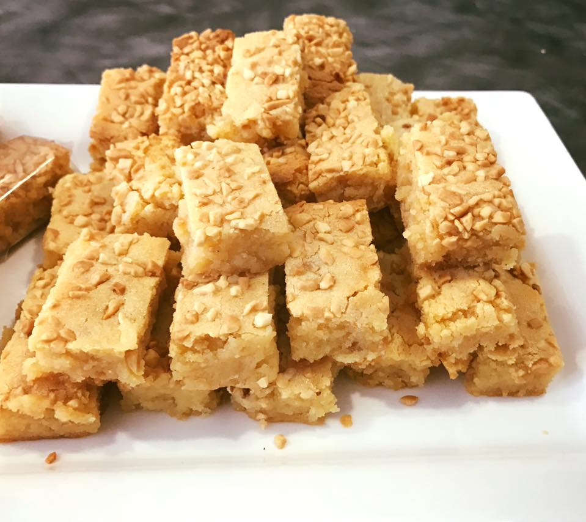

I'm Meg.
a Programmer and an aspiring Data Scientist.

a Programmer and an aspiring Data Scientist.
I am a student at the University of Texas at Dallas with a major in Information Technology & Systems.
I’m a third-year undergraduate student pursuing a BA in Information Technology and Systems with a fast track in MS in Business Analytics. My past experiences have been actively learning many programming languages.
Along with programming, I am a full-time student, and I virtually tutor elementary math to students who are in need of help. Before COVID -19, I volunteered at the Tarrant County Foodbank on the weekends where I assisted with the process of organizing and preparing canned goods and other products to be sent to families in need.
In my college experience, I have collaborated with other students in many group projects, which has taught me how to be a team player, a problem-solver, and to have great communication with each other. Additionally, I have 3 years of customer service in my previous employments and I am able to adapt to new working environments and systems quickly.
Lastly, I am currently seeking for Information Technology or Data Science opportunities in the DFW area. I am looking forward to work with a company that can help me grow professionally and emphasizes teamwork. I am a passionate learner who always seeks learning opportunities and gain professional experience.
I like to roller skate, walk, and other sorts of outdoor activities. Additionally, I am currently learning how to bake goods such as pandan cake, caramel bars, and ube-flavored pandesal!
